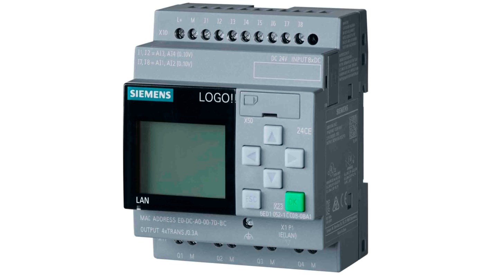

ข้อตกลงผู้อ่าน
***ข้อมูลจากบล็อกนี้จัดทำเมื่อวันที่ 10/09/2567***
Siemens LOGO!8
Siemens LOGO!8 เป็นตัวควบคุมแบบโปรแกรม (PLC) ขนาดเล็กที่ผลิตโดย Siemens ซึ่งถูกออกแบบมาเพื่อใช้ในงานอุตสาหกรรมและระบบควบคุมต่าง ๆ ที่มีความซับซ้อนต่ำถึงปานกลาง Siemens LOGO!8 เหมาะสำหรับงานอัตโนมัติที่ต้องการการควบคุมแบบง่าย เช่น ระบบแสงสว่าง, ระบบประปา, ระบบ HVAC (การควบคุมอุณหภูมิ), และงานอัตโนมัติในบ้านหรืออาคาร LOGO!8 มาพร้อมกับฟีเจอร์ที่สำคัญ เช่น: ขนาดเล็กและติดตั้งง่าย: มีขนาดกะทัดรัด ใช้พื้นที่น้อยในการติดตั้ง การเขียนโปรแกรมง่าย: สามารถเขียนโปรแกรมได้ผ่านแผนผังบล็อกฟังก์ชัน (FBD) หรือแบบแผนผังบันได (Ladder Diagram) อินเทอร์เฟซการเชื่อมต่อ: รองรับการเชื่อมต่อเครือข่าย (Ethernet) สำหรับการควบคุมและติดตามระยะไกล หน้าจอแสดงผลในตัว: รุ่นที่มีหน้าจอสามารถแสดงข้อมูลและสั่งงานได้โดยตรง การใช้งานร่วมกับระบบคลาวด์: รองรับการเชื่อมต่อกับระบบคลาวด์เพื่อควบคุมและตรวจสอบข้อมูลจากระยะไกลผ่านอินเทอร์เน็ต Siemens LOGO!8 ได้รับความนิยมเนื่องจากความยืดหยุ่นและความสะดวกในการใช้งานในโปรเจ็กต์การควบคุมอัตโนมัติหลายประเภท
1. LOGO8_t01_InputOutput
1. เพิ่มอุปกรณ์ (Add Device)
- ไปที่ Network View
- คลิกที่ Add New Device
- เลือกอุปกรณ์เป็น LOGO! 8_3_1
- กรอก IP Address, SN, และ GW
2. แก้ไขแผนผังบล็อกฟังก์ชัน (FBD)
- เปิดหน้าต่าง FBD
- แก้ไขบล็อกฟังก์ชันสำหรับการรับ/ส่งข้อมูล (Input/Output)
- บันทึกเป็น "LOGO8_t01_InputOutput"

3. อัปโหลดโปรเจคไปยัง LOGO!8
- ไปที่ Tools
- เลือก Transfer → PC to LOGO8
- กรอก LOGO! IP Address และกด Ok
4. เริ่มการทำงาน (Run Mode)
- เปลี่ยนไปที่ Run Mode เพื่อเริ่มต้นระบบ
2. LOGO8_t02a_pressOnpressOff_Ladder (Toggle with Ladder)
1. สร้างโปรเจคใหม่
- สร้างโปรเจคใหม่โดยใช้แผนผังบันได (Ladder Diagram)
- เพิ่มอุปกรณ์ LOGO!8 และเซ็ตค่าต่างๆ
2. เพิ่มส่วนประกอบสวิตซ์สลับ (Toggle Switch)
- เพิ่มคอนแทค (Contacts) และขดลวดรีเลย์ (Relay Coil) ในแผนผังบันได
- เลือกการทำงานของคอนแทคเป็น Make Contact สำหรับเปิดและ Break Contact สำหรับปิด

3. อัปโหลดและรันโปรเจค
- อัปโหลดโปรเจคไปยัง LOGO!8 และเปลี่ยนโหมดไปที่ Run Mode
3. LOGO8_t02b_pressOnpressOff (Toggle with FBD)
1. สร้างโปรเจคใหม่โดยใช้ FBD
- สร้างโปรเจคใหม่และเลือก Function Block Diagram (FBD)
- เพิ่มอุปกรณ์และเซ็ตค่าตามต้องการ

2. เพิ่มบล็อกสำหรับสวิตซ์สลับ (Toggle Switch)
- เพิ่มบล็อกฟังก์ชัน เช่น AND (Edge), XOR, และ Output เพื่อสร้างการทำงานแบบสลับ
3. อัปโหลดและรันโปรเจค
- อัปโหลดไปยัง LOGO!8 และเปลี่ยนไปที่ Run Mode
4. LOGO8_t03_pressOn_HoldOff
1. แก้ไข FBD
- สร้างโปรเจคและแก้ไข FBD สำหรับอินพุต I1 และ I2
- ตั้งค่าให้เอาต์พุตเปิดค้างเมื่อกดปุ่ม Hold (2 วินาที) On และปิดหลังจากนั้น Hold (4 วินาที) Off

2. อัปโหลดและรันโปรเจค
- อัปโหลดไปยัง LOGO!8 และเปลี่ยนโหมดไปที่ Run Mode
5. LOGO8_t04_Using_Cursor
1. ใช้ปุ่มเคอร์เซอร์สำหรับควบคุม
- กดปุ่ม ESC + Cursor Key เพื่อเลือกอินพุต
- แก้ไขข้อความและแสดงชื่อสมาชิกทั้งหมดบนหน้าจอ

2. แก้ไข FBD สำหรับการควบคุม Q0 และ Q1
- ตั้งค่าการเปิด/ปิด Up/Down = On/Off Q0 และ Left/Right = On/Off Q1
6. LOGO8_t05a_Count_Show
1. ตั้งค่าตัวนับ (Counter)
- แก้ไข FBD เพื่อสร้างตัวนับที่แสดงผลการเพิ่มหรือลดค่าของอินพุต

2. อัปโหลดและรันโปรเจค
- อัปโหลดไปยัง LOGO!8 และเปลี่ยนโหมดไปที่ Run Mode

7. LOGO8_t05b_Count_SpeedUp
1. ตั้งค่าความเร็วในตัวนับ
- เพิ่มฟังก์ชันการปรับความเร็วให้กับตัวนับใน FBD
2. อัปโหลดและรันโปรเจค
- อัปโหลดไปยัง LOGO!8 และทดสอบการแสดงผลความเร็วที่เพิ่มขึ้น/ลดลง